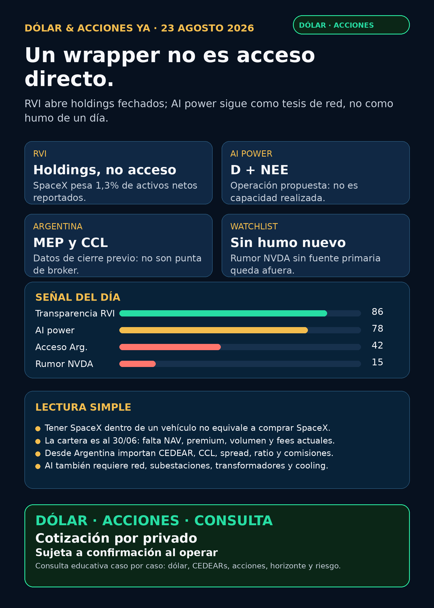

Seguí el canal: https://whatsapp.com/channel/0029Vb8G9fqGzzKSVUX3hc1S
Dólar & Acciones YA — 23/08/2026
Corte editorial: domingo 23/08/2026, 08:47 (Argentina). Research con fuentes verificables; no es asesoramiento financiero ni recomendación de compra/venta. Cartera Ricardo: liquidada, devuelta y terminada; no hay posiciones activas ni P&L que reportar.
Lectura simple del día
La señal del día no es “SpaceX se puede comprar”: es lo contrario. RVI presentó una cartera fechada al 30/06/2026 que permite ver qué tiene adentro. Allí, SpaceX representa aproximadamente 1,3% de los activos netos informados. También aparecen OpenAI, Databricks, Stripe, Revolut y otras privadas, pero una parte relevante del vehículo está en money-market.
En criollo: ver un nombre famoso dentro de un fondo/wrapper no transforma al wrapper en exposición directa, ni te dice si su precio de mercado es razonable. Para eso faltan NAV actual, premium/descuento, fees, volumen, spread y ruta de acceso real.
La otra señal útil es de disciplina: Dominion (D) y NextEra (NEE) siguen con una operación propuesta, sujeta a aprobaciones y condiciones. La electricidad física para data centers sigue siendo una tesis estructural, pero no hay que contar una fusión proyectada como potencia ya disponible, ahorro realizado o contrato AI.
Argentina: dólar e instrumento antes que ticker
- Referencias públicas, no puntas ejecutables de broker: BlueLytics devolvió dólar blue comprador/vendedor ARS 1.517,00 / ARS 1.550,00, con último update 21/08 19:46. CriptoYa devolvió USDT compra/venta ARS 1.580,00 / ARS 1.591,00 con timestamp 23/08 08:46.
- MEP/CCL: CriptoYa muestra MEP AL30 24h en ARS 1.528,13 y CCL AL30 24h en ARS 1.590,34, ambos timestamp 21/08 16:59. Son registros de cierre previo: no son una cotización intradiaria garantizada para ejecutar hoy.
- En criollo: un CEDEAR es un certificado local que sigue a un activo externo, pero la decisión real exige mirar ratio, CCL implícito, volumen, spread, comisiones y plazo de liquidación. Buena empresa ≠ buena inversión a cualquier precio ≠ buen instrumento para Argentina.
- Fuentes: BlueLytics · CriptoYa.
Ranking educativo por calidad de señal — no es ranking de compra
1) RVI — transparencia de holdings, no acceso directo a privadas
- Señal fortalecida / está en radar: el NPORT-P presentado el 21/08 informa activos netos por USD 681,77 millones e inversiones por USD 685,25 millones, con cartera no auditada al 30/06/2026.
- Composición verificable: Space Exploration Technologies Clase A figura por USD 8,54 millones (1,3% de activos netos). También figuran OpenAI Clase A por USD 75,00 millones, Canva por USD 25,00 millones, Databricks Series K/L por USD 86,63 millones combinados, Ramp por USD 33,33 millones, Revolut por USD 49,82 millones y Stripe por USD 29,54 millones. El money-market reportado es USD 220,09 millones (32,3% de activos netos).
- Riesgo principal: la cartera está fechada; no prueba valor actual por acción, premium/descuento, volumen, fees, liquidez o precio razonable. Un holding de SpaceX no equivale a comprar SpaceX.
- Accionabilidad: internacional/global: ticker
RVI, pero faltan verificar precio, NAV/premium, volumen, prospecto y broker. Local Argentina: CEDEAR, ruta de broker, spread, comisiones y fiscalidad no verificados. Está en radar; no accionable por ahora. - Fuente primaria: SEC NPORT-P / Schedule of Investments, 21/08.
2) RVI — venta del sponsor: estructura y float, no tesis de negocio
- Hecho verificado: Robinhood Markets reportó dos ventas de
RVI: 8.175 acciones el 19/08 a USD 27,11 y 8.186 el 20/08 a USD 26,95. El cálculo sobre el Form 4 suma 16.361 acciones, aproximadamente USD 442.236,95 de proceeds y VWAP aproximado de USD 27,03. - Lectura correcta: es un dato de oferta/float y liquidez a monitorear. No demuestra deterioro ni oportunidad; sin NAV/premium contemporáneo y volumen no permite juzgar el precio.
- Fuente primaria: SEC Form 4, 21/08.
3) AI power: acuerdo D–NEE aún no es ejecución
- Está en radar: Dominion presentó una comunicación Rule 425 sobre la operación propuesta con NextEra. El documento mantiene aprobaciones, condiciones de cierre, integración y riesgos como pendientes.
- En criollo: “propuesto” no es “cerrado”. No hay sinergias realizadas, capacidad liberada ni ingreso AI confirmado por este filing.
- Accionabilidad:
DyNEEcotizan globalmente; para Argentina, CEDEAR/instrumento, liquidez y acceso no fueron verificados en esta corrida. Vigilar, no decisión de compra. - Fuente primaria: SEC Form 425 de Dominion.
Watchlist base — seguimiento rápido
- Revisados sin señal primaria operacional nueva fuerte:
RKLB,NVDA,PLTR,TSM,MU,GOOGL/GOOG,AAPL,HOOD,TSLA,ASML,AVGOyCBRS. - NVIDIA: RSS detectó reportes sobre subas de precio en chips AI, atribuidos a Bloomberg/Reuters, pero sin comunicado de NVIDIA ni secundaria abierta verificable en esta corrida. NO VERIFICADO / AUDITORÍA: no se publica como hecho.
- Oro:
GLD,GOLDyBson instrumentos/entidades distintos. Sin activo exacto no corresponde reportar precio o rendimiento. - RVI: ganó transparencia de composición, pero sigue sin el paquete completo de NAV/premium, fees, liquidez y acceso. Vigilar; no accionable por ahora.
Energía y power hardware
- Utilities USA:
D/NEEtienen señal documental de operación propuesta.VST,CEG, nuclear y uranio fueron revisados sin hito primario contractual, regulatorio o de resultados nuevo. - El segundo peaje de AI es electricidad física: subestaciones, transformadores, switchgear, interconexión, generación, cooling y financiación.
GEV,ETN,PWR,HUBB,VRT,MOD, Hitachi/Hitachi Energy, Siemens Energy (ENR.DE, no Siemens AG), HD Hyundai Electric y Hyosung fueron revisados sin pedido, backlog, guidance o filing primario fresco. - Argentina:
YPF,PAM/PAMP,CEPU,TGSyVISTfueron revisadas sin primaria nueva fuerte. Son radar educativo; precio vivo, volumen, spread y CCL quedan para una evaluación separada. - Accionabilidad: Virginia Transformer y Delta Star son privadas: no accionables directo. Los nombres cotizantes globales no se convierten automáticamente en CEDEAR argentino: primero se verifica instrumento y liquidez.
Pharma y salud
LLY,NVO,PFE,MRK,AZN,REGN,AMGNy el carril GLP-1 fueron revisados. No apareció aprobación FDA/EMA, label, Phase III, guidance, patente o M&A primario fresco que cambie el mapa.- La aprobación acelerada de
RAREdel 19/08 sigue vigente como hito regulatorio de producto, pero no es noticia nueva de hoy ni prueba ventas o cobertura. - Lectura útil: en salud, aprobación, ensayo, cobertura, adopción e ingresos son etapas distintas. No conviene reciclar titulares viejos como catalizador diario.
Radar amplio y recibo de cobertura
- Defensa / guerra física / aerospace:
AVAV,GE,RTX,LMT,NOC,GD,HWM,KTOS,BA,ITAyXARrevisados. Los filings recientes deNOCyBAson de compensación/nombramientos; no prueban contratos, backlog, guidance o margen. Revisado sin señal fuerte de negocio. - Space / orbital AI:
SPCX, RKLB, Starlink, DXYZ y Starcloud revisados. Sin comunicado de emisor, filing de financiación o términos verificables nuevos. Auditoría; no accionable directo por ahora. - Autonomía / physical AI: Tesla, Waymo/Alphabet, Uber, Zoox/Amazon y Joby revisados; sin permiso, flota, partner o filing primario nuevo para convertir en titular.
- Fintech, agentes y crypto gobernado: sin rail de pagos, regulador, contrato o filing material nuevo. Agentes de trading: sólo enfoque educativo con paper/read-only, ledger, límites y aprobación humana; no token viral ni promesa de rendimiento.
- Wrappers de privadas:
DXYZ,ARKVX,AGIX,XOVR,VCX,FAPMI/ForgeyRVII: sin paquete contemporáneo verificable de listing, holdings, NAV, premium/descuento, fees, volumen y acceso. NO ACCIONABLE / NO VERIFICADO.
Red flags para ignorar
1. Ver SpaceX u OpenAI dentro de un wrapper no equivale a exposición directa ni da precio razonable.
2. Una cartera al 30/06 no es NAV ni cotización actual al 23/08.
3. Una venta de sponsor no se convierte sola en señal de negocio, compra o venta.
4. Operación propuesta no es cierre, capacidad ni sinergia realizada.
5. RSS sobre precios NVIDIA sin primaria o secundaria verificable es discovery, no evidencia publicable.
Qué mirar después
1. RVI: prospecto/fact sheet, NAV actual por acción, premium/descuento, fees, volumen, lock-ups y acceso real Argentina/global.
2. D/NEE: aprobaciones, condiciones de cierre, financiamiento y hechos operativos, no sólo comunicaciones de la operación.
3. Power hardware: pedidos, backlog, guidance, lead times, permisos e interconexión en GEV, Hitachi, Siemens Energy, HD Hyundai y Hyosung.
4. NVDA: esperar comunicado o fuente secundaria verificable sobre cualquier cambio de pricing antes de elevarlo a tesis.
5. Desde Argentina: antes de decidir, revisar subyacente USD, CCL implícito, ratio CEDEAR, spread, volumen y comisiones el mismo día.
Servicio privado
Dólar · Acciones · Consulta privada. Si querés ordenar dólar, CEDEARs, acciones, horizonte y riesgo, escribime por privado y lo vemos caso por caso. Cotización sujeta a confirmación al momento de operar.
Disclaimer: este reporte es research educativo para decisión humana. No es asesoramiento financiero personalizado ni recomendación de compra o venta.